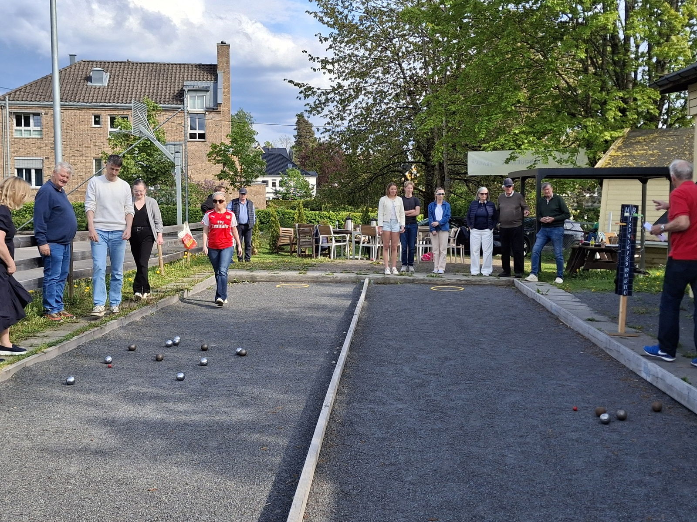
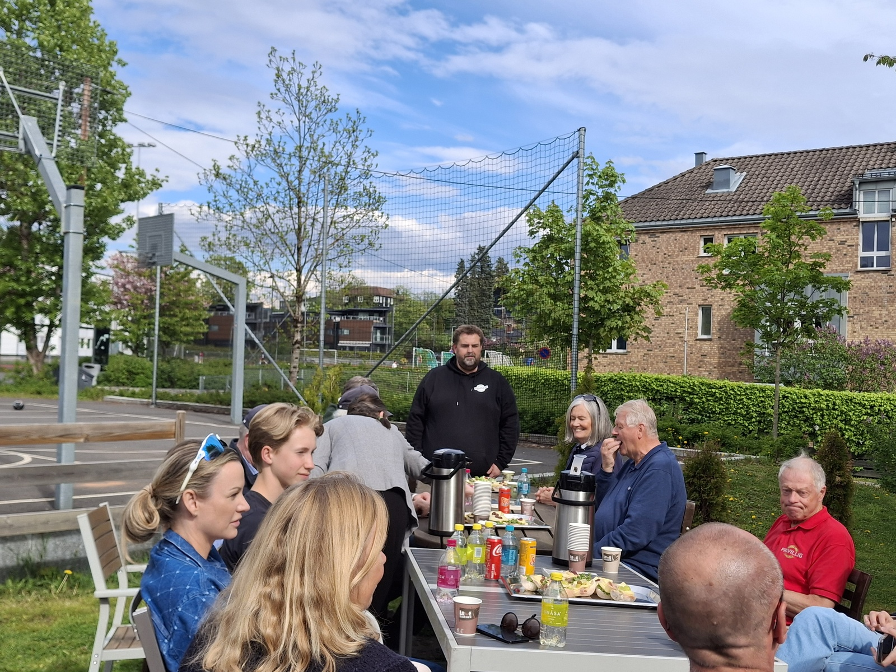
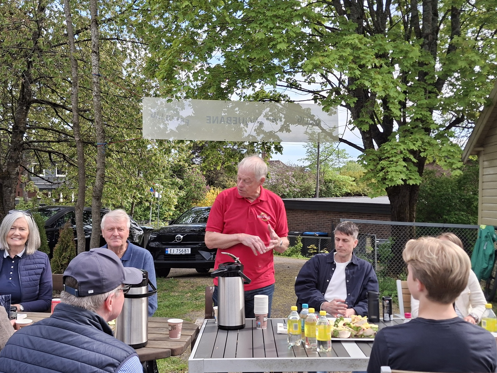
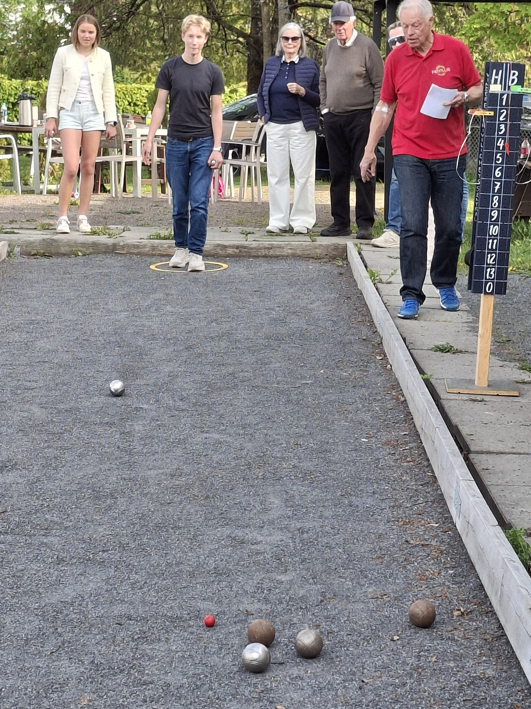
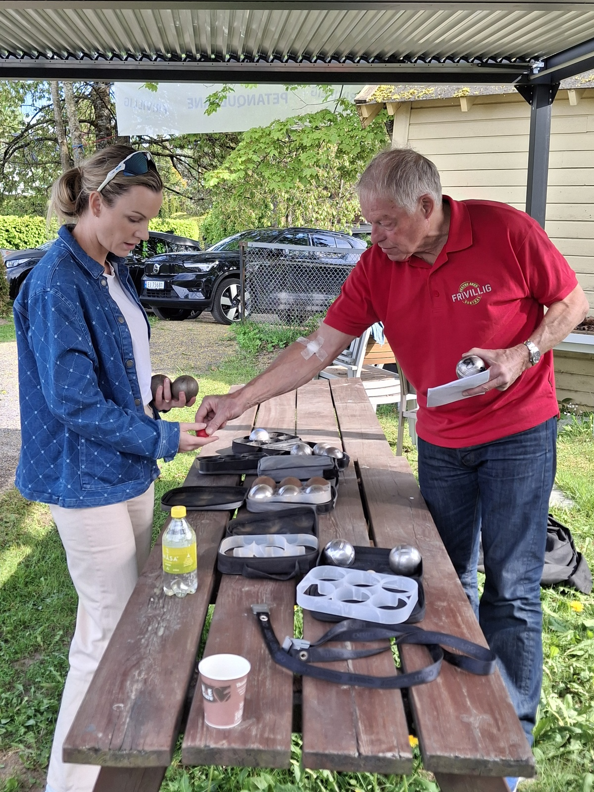
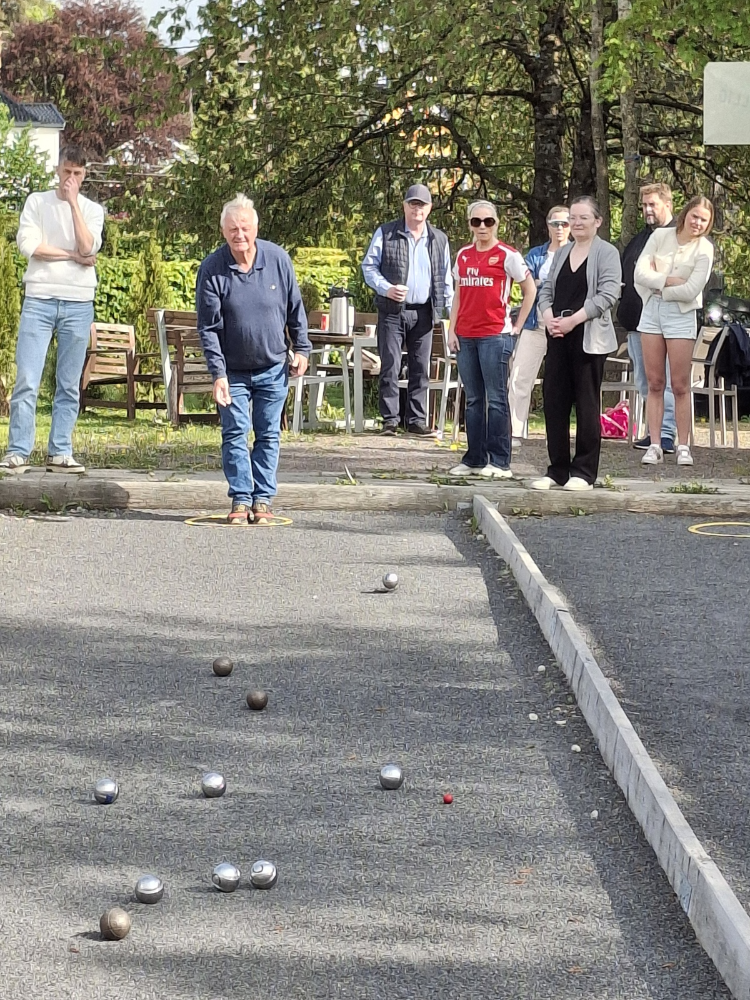
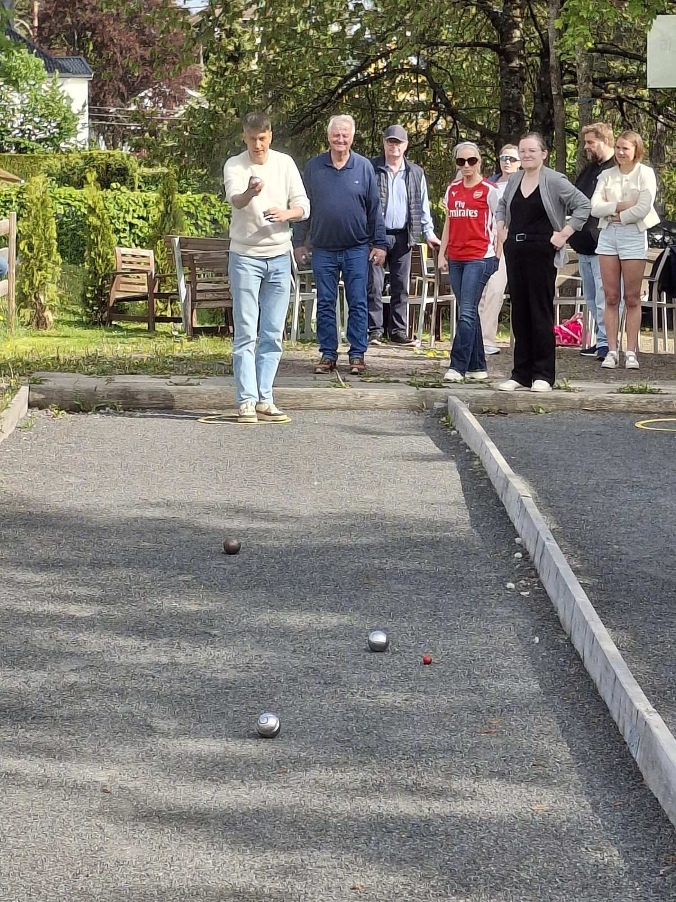
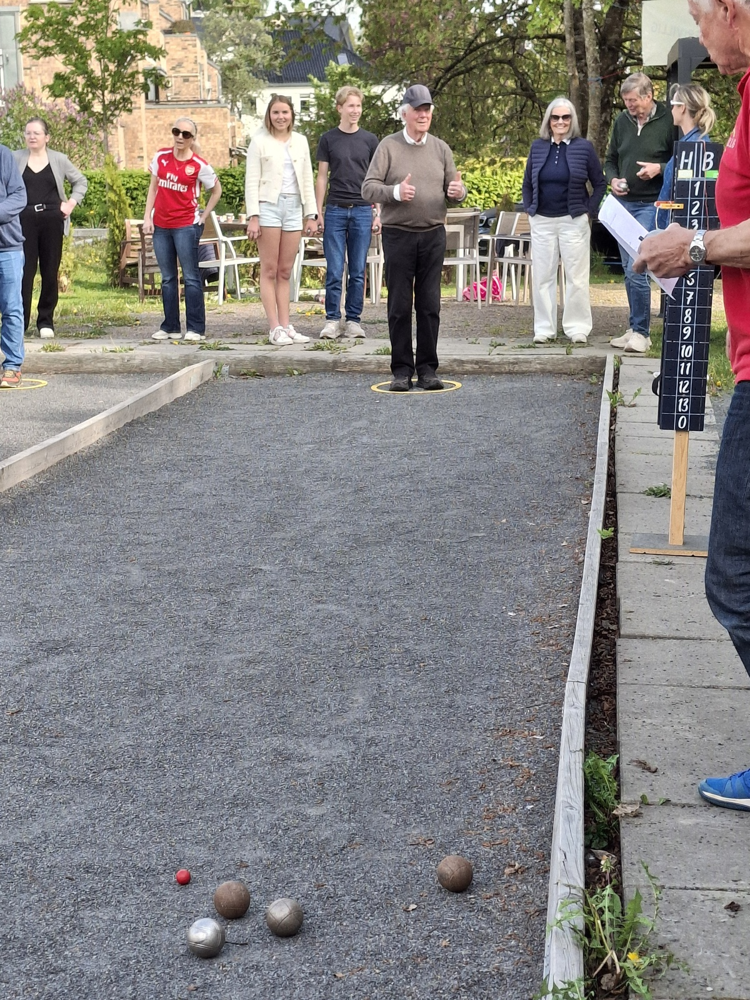
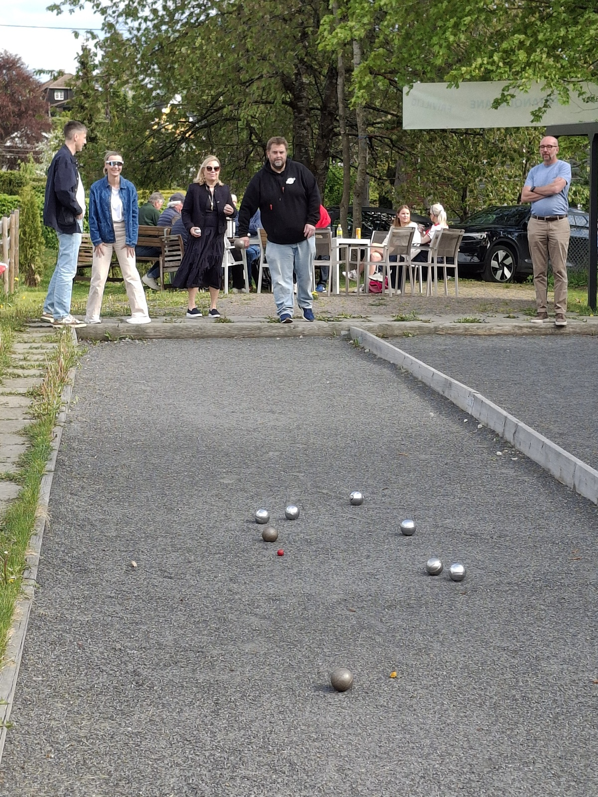

Fem år med petanque på Vinderen: Fellesskap, konkurranse og god stemning
For fem år siden sørget Vestre Aker Frivilligsentral for at bydelen fikk to petanquebaner på Vinderen. I jubileumsturneringen møtte ungdomsrådet, bydelsutvalget, administrasjonen og seniorrådet hverandre til en ettermiddag med presisjon, latter og vennskapelig rivalisering.
For fem år siden sørget Vestre Aker Frivilligsentral for at bydelen fikk to petanquebaner på Vinderen, i Ris skolevei 14. Siden den gang har banene vært arena for utallige kast, mange gode samtaler, mye latter og ikke minst en rekke små og store turneringer.
Petanque er et enkelt spill å komme i gang med, men vanskelig å mestre fullt ut. Det er nettopp noe av sjarmen. Her kan nybegynnere og erfarne spillere møtes på samme bane, og det tar sjelden lang tid før både konkurranseinstinktet og humøret våkner.

I anledning banenes femårsjubileum inviterte Vestre Aker Frivilligsentral representanter fra ungdomsrådet, bydelsutvalget, administrasjonen og seniorrådet til en uformell jubileumsturnering. Sammen med frivilligsentralen ble dette en fin match mellom ulike deler av bydelen - på tvers av alder, roller og ansvar. Resultatet ble en ettermiddag preget av engasjement, smil og vennskapelig rivalisering.
Før matchen begynte, stilte Frivilligsentralen med nysmurte rundstykker og kald og varm drikke. Det ga en fin og uformell ramme rundt arrangementet, der praten gikk lett før alvoret begynte på banen.

Turneringsansvarlig Per E. Koch ga deltakerne en innføring i spillets regler og fortalte samtidig litt om anlegget. Petanquebanene på Vinderen er åpne for alle og kan benyttes hver dag. For dem som har lyst til å prøve, men som ikke helt vet hvordan man kommer i gang, tilbys det opplæring og instruksjon hver mandag fra kl. 13.30. Vestre Aker Frivilligsentral låner også ut petanqueballer fra kontoret på Møteplass Vinderen.
Da spillet først var i gang, var det tydelig at dette ikke bare var en høflig markering. Lagene gikk inn i turneringen med både konsentrasjon og innsatsvilje. På den ene banen møttes bydelsutvalget og administrasjonen. På den andre banen konkurrerte ungdomsrådet og seniorrådet.

Alle spillerne var utstyrt med to petanqueballer hver, og målet var å komme nærmest mulig den lille målballen, kjent som «grisen». Kastene varierte fra forsiktige forsøk til mer offensive satsinger, og underveis ble det både jubel, små frustrerte utrop og godmodige kommentarer fra sidelinjen.
Etter omtrent en halv time viste poengtavlen at bydelsutvalget hadde vunnet knepent over administrasjonen. På den andre banen var det ungdomsrådet som trakk det lengste strået mot seniorrådet.
Dermed var det klart for både gullkamp og bronsekamp. I finalen møttes bydelsutvalget og ungdomsrådet, mens administrasjonen og seniorrådet gjorde opp om tredjeplassen. Etter en engasjerende avslutning var det til slutt ungdomsrådet som gikk helt til topps og kunne innkassere seieren i jubileumsturneringen. Seniorrådet sikret seg bronseplassen.
Selv om konkurransen var reell nok, var det fellesskapet som ble stående igjen som dagens viktigste resultat. Petanquebanene på Vinderen har gjennom fem år vist seg å være mer enn bare et anlegg for et spill. De er blitt et lite sosialt samlingspunkt i nærmiljøet, et sted der folk kan møtes på tvers av alder, roller og bakgrunn.
Fotoserien fra turneringen, tatt av Julie, viser nettopp dette: god stemning, konsentrerte spillere, latter, engasjement og en ettermiddag der bydelens ulike generasjoner og roller møttes på en uformell og hyggelig måte.
Femårsjubileet ble derfor ikke bare en markering av to petanquebaner. Det ble også en påminnelse om hva små møteplasser kan bety i et lokalsamfunn. Når ungdomsrådet, bydelsutvalget, administrasjonen, seniorrådet og frivilligsentralen møtes rundt samme bane, skjer det noe fint: Rollene blir litt mindre formelle, praten litt lettere og fellesskapet litt tydeligere. Noen ganger skal det ikke mer til enn en grusbane, noen metallkuler, litt mat og drikke - og mennesker som har lyst til å møtes.
Flere øyeblikk fra turneringen




